In this document, we explore the acute effects of air pollutants on health outcomes found in the causal inference literature. Using an extensive search strategy on Google Scholar, PubMed, Connected Papers and journal websites, we found a corpus of 29 relevant articles.
For each article, we retrieved the method used by the authors, which health outcome and air pollutant they study, the point estimate and the standard error of the main result. As each paper focuses on different pollutants and outcomes, we standardize the estimates using the standard deviations of the independent and outcome variables (the formula we used is available here here):
- If we denote \(\beta_{unstandardized}\) the unstandardized estimate, SD\(_{X}\) the standard deviation of the treatment and SD\(_{Y\) the standard deviation of the health outcome, the standardized estimate is equal to \(\beta_{standardized} = \beta \times \frac{SD_{X}}{SD_{Y}}\).
- The standardized standard error SE\(_{standardized}\) is then equal to \(SE_{standardized} = SE_{unstandardized} \times \frac{\beta_{standardized}}{\beta_{unstandardized}}\).
For very few papers, we had to infer the mean and standard deviation of a pollutant or an health outcome with statistics such as the median and the quartiles. We use the formula found here.
Our document is organized as follows:
In the first section, we explore the distribution of the main metrics we retrieved, such as standardized estimate, sample size, first stage F-statistic for instrumental variable design. We also display the relationship between estimated effect sizes and the precision of these estimates.
In the second section, we draw the forest plots of results by research design.
In the third section, we compute the statistical power, the type M error and the probability to make a type S error for each paper using different guesses of true effect sizes. For this task, we rely on the very convenient retrodesign package.
In the fourth and last section, we mine the texts of the articles to understand to which extent researchers rely on the null hypothesis significance testing framework.
Should you have any questions or find coding errors, please do not hesitate to reach use at vincent.bagilet@columbia.edu and leo.zabrocki@psemail.eu.
Loading and Formatting Data
We load the packages:
# load packages
library(here) # for files paths organization
library(readxl) # for reading xlsx files
library(tidyverse) # for data manipulation and visualisation
library(retrodesign) # formulas for type-m and type-s errors
library(pdftools) # for text mining pdf
library(knitr) # for tables
library(kableExtra) # for building nice tables
library(ggbeeswarm) # for bees swarm plots
library(patchwork) # for combining plots
library(Cairo) # for printing specific fonts
library(mediocrethemes)
set_mediocre_all()
#color for beeswarm graphs
my_blue <- "#00313C"
my_orange <- "#FB9637"
We load the literature review data:
We retrieved data for 29 articles. We then compute standardized effects and their associated 99% and 95% confidence intervals.
# compute standardized estimates and standard errors
data <- data %>%
mutate(
standardized_estimate = ifelse(
standardized_effect == "No",
estimate * sd_independent_variable / sd_outcome,
estimate
),
standardized_standard_error = ifelse(
standardized_effect == "No",
standard_error * standardized_estimate / estimate,
standard_error
)
)
# compute confidence intervals
data <- data %>%
mutate(
upper_bound_95 = standardized_estimate + (-qnorm((1 - 0.95) / 2) * standardized_standard_error),
lower_bound_95 = standardized_estimate - (-qnorm((1 - 0.95) / 2) * standardized_standard_error),
upper_bound_99 = standardized_estimate + (-qnorm((1 - 0.99) / 2) * standardized_standard_error),
lower_bound_99 = standardized_estimate - (-qnorm((1 - 0.99) / 2) * standardized_standard_error),
)
Overview of Main Metrics Distribution
In this section, we explore the distribution of standardized, sample sizes and first-stage F-statistics. We also explore the relationship between estimated effect sizes and the inverse of standard errors, a metric for an estimate’s precision.
Standardized Estimates
We select the standardized estimates for causal inference methods (we omit first stage and conventional time series estimates). We display below the summary statistics for the distribution of standardized estimates:
| Min | First Quartile | Mean | Median | Third Quartile | Maximum |
|---|---|---|---|---|---|
| 0.0045949 | 0.0674217 | 0.2636164 | 0.1308562 | 0.3839063 | 1.022553 |
We draw the beeswarm plot of standardized estimates:
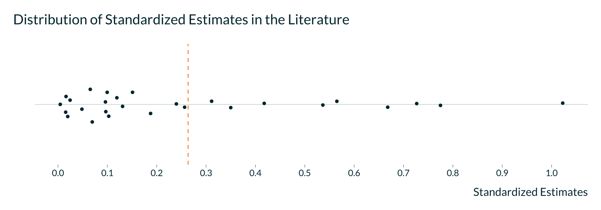
We see that half of the studies estimated effect sizes below 0.3 standard deviation. 6 studies found very large effect sizes superior to 0.5 standard deviation.
To reduce a bit the the heterogeneity between studies, we plot the same graph by mortality and hospital admission outcomes:

Sample Sizes
We display below the distribution of studies’ sample sizes:
| Min | First Quartile | Mean | Median | Third Quartile | Maximum |
|---|---|---|---|---|---|
| 343 | 1950.25 | 3016484 | 15782 | 117951.5 | 73109698 |
The median number of observations in the causal inference literature is about 15,000. We display the distribution of sample sizes using a beeswarm plot with a log base 10 scale:
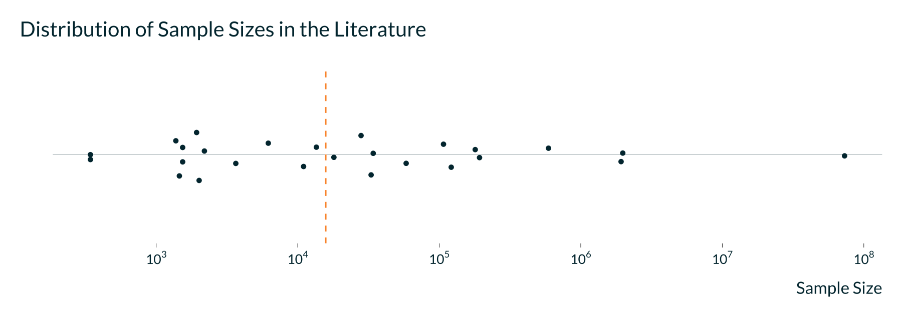
First F-Statistics
In the causal inference literature, 19 studies are based on an instrumental variable research design. The strength of the instrument is often assessed with the first stage F-statistic. We display below descriptive statistics for the first F-statistics distribution:
| Min | First Quartile | Mean | Median | Third Quartile | Maximum |
|---|---|---|---|---|---|
| 5 | 25.25 | 110.1429 | 30.5 | 75.25 | 639 |
Half of the first stage F-statistics are below 31. We display the distribution of first-stage F-Statistics with a beeswarm plot and a log base 10 scale:
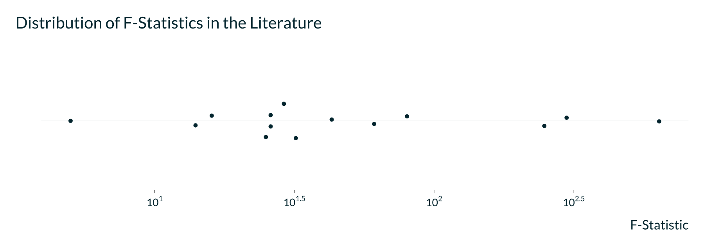
Estimated Effect Sizes versus Precision
We plot below the relationship between the standardized estimates and the inverse of the standard errors:
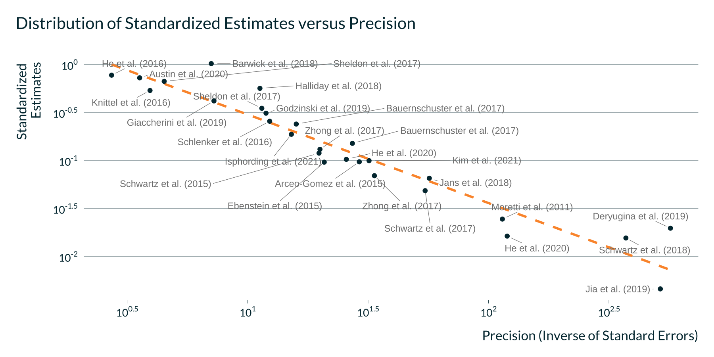
We clearly see a negative linear relationship between estimated effect sizes and precision. To limit a bit the heterogenity between studies, we also reproduce the previous graph but by health outcomes:
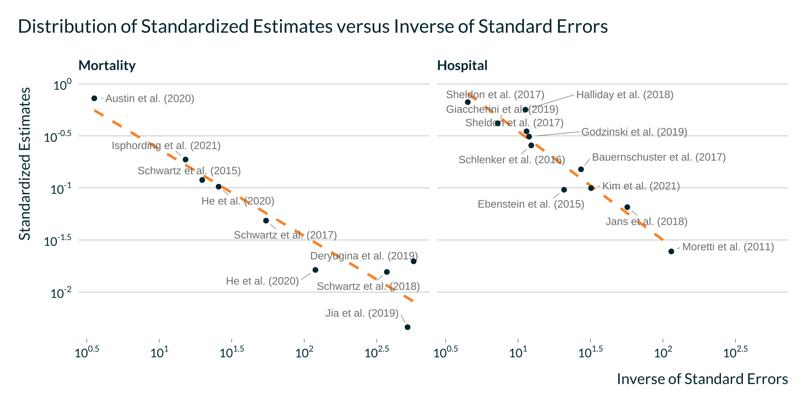
Forest Plots
In this section, we create forest plots. For each study and empirical strategy, we display the standardized estimates with their associated 95% confidence intervals. We first create the relevant data set.
2SLS Estimates
We display below the forest plot for all 2SLS estimates:
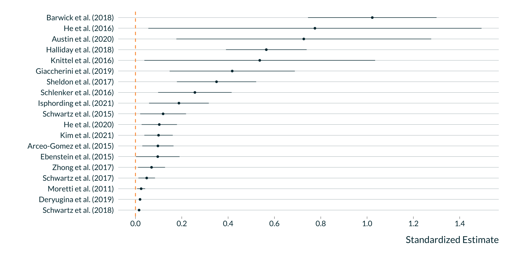
We display below the forest plot for 2SLS estimates focused on mortality outcomes:
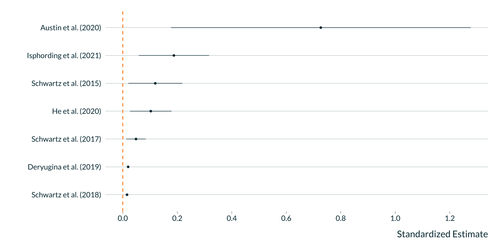
We display below the forest plot for 2SLS estimates focused on hospital outcomes:
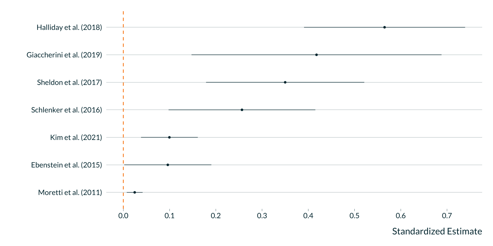
Reduced-Form Estimates
For articles based on an instrumental variable strategy, we also display below the reduced-form estimates:
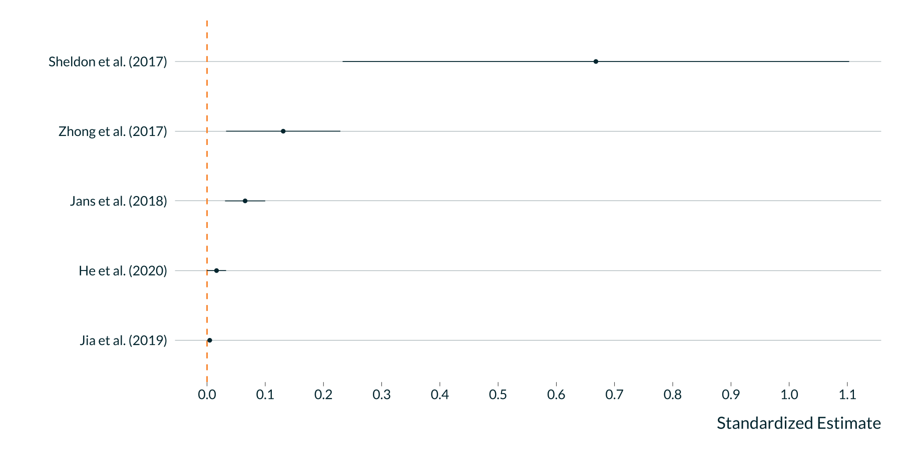
Conventional Time Series Estimates
Several papers fit a conventional time series model in order to compare the resulting estimates with those of a 2SLS procedure:
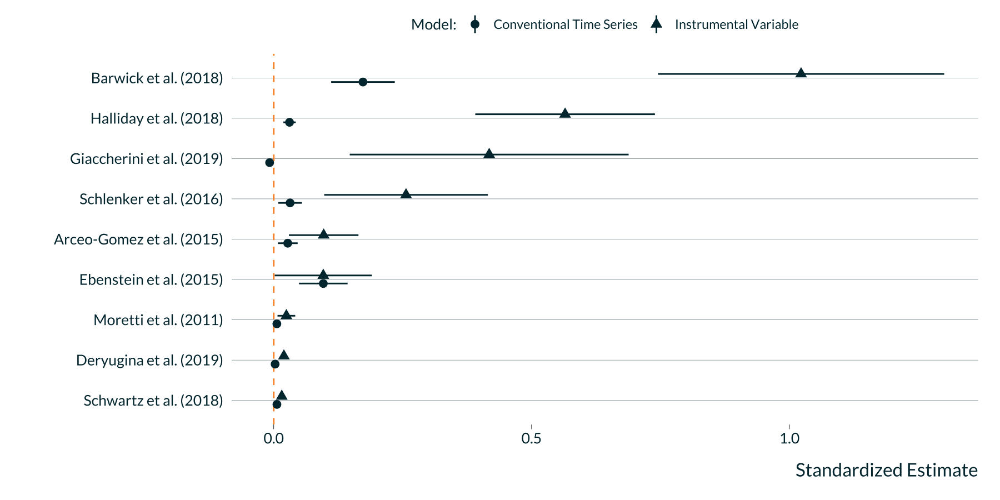
Statistical Power, Type M and S Errors
In this section, we compute the statistical power, the exaggeration factor (Type M error) and the probability to make a type S error for each study. We rely on the retrodesign package.
Computing Statistical Power, Type M and S errors
To compute the three metrics, we need to make an assumption about the true effect size of each study. We find three different ways to proceed:
- We first define the true effect sizes as a decreasing fraction of the estimates. We want to see how the overall distribution of the three metrics evolve with as we decrease the hypothesized true effect size.
- We then take as the true effect size what what was found with a standard OLS model for papers based on instrumental variable design.
# test type-m and type-s errors
data_retrodesign <- data %>%
filter(!(model %in% c("First Stage", "Conventional Time Series"))) %>%
filter(paper_id != "Beard") %>%
filter(lower_bound_95 > 0) %>%
drop_na(health_outcome_type) %>%
select(paper_label, model, estimate, standard_error) %>%
mutate(model = fct_relevel(
model,
"Reduced-Form",
"Instrumental Variable",
"Difference in Differences"
))
True Effect Sizes as Fractions of Estimates
For each study, we compute the statistical power, the exaggeration factor and the probability to make a type S error by defining their true effect sizes as decreasing fraction of the estimates.
# compute power, type m and s errors for decreasing true effect sizes
data_retrodesign_fraction <- data_retrodesign %>%
crossing(percentage = seq(1:100)/100) %>%
mutate(hypothetical_effect_size = percentage*estimate) %>%
mutate(
power = map2(
hypothetical_effect_size,
standard_error,
~ retro_design(.x, .y)$power * 100
),
type_s = map2(
hypothetical_effect_size,
standard_error,
~ retro_design(.x, .y)$typeS * 100
),
type_m = map2(
hypothetical_effect_size,
standard_error,
~ retro_design(.x, .y)$typeM
)
) %>%
unnest(cols = c(power, type_s, type_m)) %>%
filter(percentage >= 0.25)
We plot below the three metrics for the different scenarios:
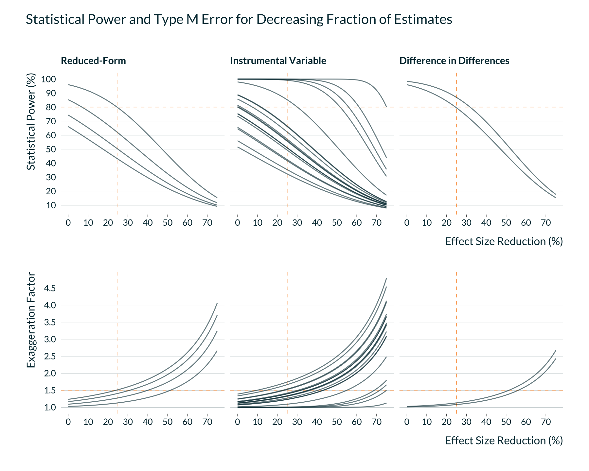
We display below summary statistics for the scenario where true effect sizes are equal to 75% of observed estimates:
| Metric | Min | First Quartile | Mean | Median | Third Quartile | Maximum |
|---|---|---|---|---|---|---|
| Exaggeration Factor | 1.0 | 1.1 | 1.3 | 1.3 | 1.4 | 1.7 |
| Statistical Power (%) | 32.3 | 49.8 | 64.6 | 59.4 | 81.0 | 100.0 |
| Type S Probability (%) | 0.0 | 0.0 | 0.0 | 0.0 | 0.0 | 0.1 |
We also display below summary statistics for the scenario where true effect sizes are equal to 50% of observed estimates:
| Metric | Min | First Quartile | Mean | Median | Third Quartile | Maximum |
|---|---|---|---|---|---|---|
| Exaggeration Factor | 1 | 1.4 | 1.7 | 1.8 | 2.0 | 2.5 |
| Statistical Power (%) | 17 | 25.6 | 41.3 | 31.1 | 47.4 | 100.0 |
| Type S Probability (%) | 0 | 0.0 | 0.2 | 0.1 | 0.2 | 0.9 |
True Effect Sizes Equal to OLS Estimates for IV Designs
We also computed statistical power, the exaggeration factor and the probability to make a type S error for the 9 articles based on instrumental variables which also displayed the estimates for a standard OLS model:
| Paper | Statistical Power (%) | Probability of Type S Error (%) | Exaggeration Factor |
|---|---|---|---|
| Schwartz et al. (2018) | 64.0 | 0.0 | 1.3 |
| Moretti et al. (2011) | 10.7 | 3.7 | 3.5 |
| Deryugina et al. (2019) | 34.4 | 0.1 | 1.7 |
| Schlenker et al. (2016) | 6.8 | 13.8 | 6.1 |
| Halliday et al. (2018) | 6.4 | 16.6 | 6.9 |
| Arceo-Gomez et al. (2015) | 12.4 | 2.4 | 3.1 |
| Giaccherini et al. (2019) | 5.0 | 43.3 | 40.7 |
| Barwick et al. (2018) | 23.1 | 0.3 | 2.1 |
| Ebenstein et al. (2015) | 51.6 | 0.0 | 1.4 |
Statistical Inference Narrative
In this section, we mine the text of articles to explore how researcher report their statistical inference procedure. Do they mention issues regarding the statistical power of their study? Do they talk about the precision of their estimates or only report them as “statistically significant”?
# get pdf files folder path
folder_articles <-
here::here("1.data", "1.selected_articles")
# get the path for each file and add the associated city name
data_articles <-
tibble(file_path_article = list.files(
path = folder_articles,
pattern = ".pdf",
full.names = F
)) %>%
mutate(paper_id = str_remove(string = file_path_article, pattern = ".pdf"))
# function to convert PDF to text
function_pdf_to_text <- function(file_path_article) {
pdftools::pdf_text(here::here("1.data", "1.selected_articles", file_path_article)) %>%
paste(sep = " ") %>%
stringr::str_replace_all(fixed("\n"), " ") %>%
stringr::str_replace_all(fixed("\r"), " ") %>%
stringr::str_replace_all(fixed("\t"), " ") %>%
stringr::str_replace_all(fixed("\""), " ") %>%
paste(sep = " ", collapse = " ") %>%
stringr::str_squish() %>%
stringr::str_replace_all("- ", "") %>%
tolower()
}
# function to retrieve the article's title
function_pdf_title <- function(file_path_article) {
pdftools::pdf_info(here::here("1.data", "1.selected_articles", file_path_article))[["keys"]][["Title"]]
}
# get article titles
data_articles <- data_articles %>%
mutate(title = map(file_path_article, ~ function_pdf_title(.)))
# convert all PDFs to texts
data_articles <- data_articles %>%
mutate(text = map(file_path_article, ~ function_pdf_to_text(.)))
# count occurence of statistical terms
data_articles <- data_articles %>%
mutate(
n_power = str_count(text, "statistical power"),
n_statistically_significant = str_count(text, "statistically significant"),
n_significant = str_count(text, "significant"),
n_insignificant = str_count(text, "insignificant"),
n_precise = str_count(text, "precise"),
n_imprecise = str_count(text, "imprecise"),
n_ci = str_count(text, "confidence interval")
) %>%
select(-text,-title)
We display the proportion of articles where at least one occurence of a term appears:
| Power (%) | Statistically Significant (%) | significant | Insignificant (%) | Precise (%) | Imprecise (%) |
|---|---|---|---|---|---|
| NaN | NaN | NaN | NaN | NaN | NaN |